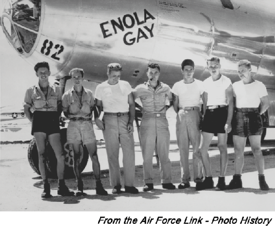
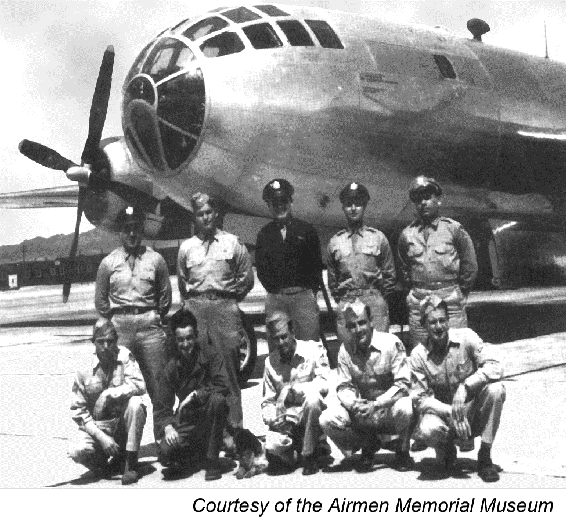

Chapter 2
ENLISTED HISTORY
Section 2A—Overview
2.1. Introduction.
The history of the Air Force enlisted corps is long and varied. The United States Air Force traces their origin to the establishment of the Aeronautical Division, created on 1 August 1907. The Army, however, first used “aerial devices” for military purposes during the American Civil War, when President Lincoln created an unofficial balloon section. From Benjamin Franklin to the second Seminole War in 1840 to the war with Mexico in 1846, the Army has been interested in using balloons for military purposes but never did. Consequently, enlisted support for United States military aviation began with Civil War balloon operations. This chapter examines how enlisted participation in the many wars and conflicts throughout our history helped develop the United States Air Force into the greatest Air Force in the World. Enlisted Airmen historically comprised some 80 percent of America’s air forces. From humble beginnings to today’s great United States Air Force, the enlisted corps deserves much of the credit for their development and great accomplishments. Finally, the purpose for including this chapter within AFH 1, Airman is to provide enlisted Airmen reference material to support their promotion tests.
Section 2B—Milestones of World War I and World War II
2.2. Milestones of World War I (1917-1918):
2.2.1. When the first shots of the Great War were fired in Europe in August 1914, the 1st Aero Squadron mustered a dozen officers, 54 enlisted men, and 6 aircraft. By the end of 1915, the squadron counted 44 officers, 224 enlisted men, and 23 airplanes. This constituted the entire air arm of the United States Armed Forces.
2.2.2. By 1916, a second aero squadron was added, assigned to duty in the Philippine Islands, and new training facilities were added. In October 1916, plans were laid for 24 squadrons: 7 to serve with the regular Army, 12 with the National Guard, and 5 for coastal defense, supplementing balloon units for the field and coast artillery. Each squadron was to muster a dozen aircraft. The regular Army squadrons were either organized or in the process of being organized by the end of 1916, and all 24 squadrons were formed by early 1917, but only the 1st Aero Squadron was fully equipped, manned, and organized when the United States declared war on Germany 6 April 1917.
2.2.3. By April 1917, the United States Army Aviation Section consisted of 131 officers (virtually all pilots or pilots-in-training), 1,087 enlisted men, and had fewer than 250 airplanes. Even as the war in Europe dragged on, the United States Congress refused to appropriate significant funds for Army aeronautics. The Army’s poor state of preparedness could not be laid entirely at Congress’ feet. The Army had no plan to enable them to build an air force and did not send trained observers to Europe. General staff officers were so out of touch with modern aerial warfare requirements that their chief complaint about air personnel was the disrespectful manner in which flying officers flouted regulations by refusing to wear their cavalry spurs while flying airplanes.
2.2.4. Tradition dictated that pilots be drawn from the ranks of commissioned officers, but the Aviation Section soon realized the pressing need for trained enlisted personnel to perform duties in supply and construction and to serve specialized functions in the emerging aviation-related fields of photo reconnaissance and radio. Most of all, the Aviation Section needed mechanics. The war demanded engine mechanics, armament specialists, welders, riggers, and sail makers. The Army first pressed factories into service as training sites, but by the end of 1917, the Aviation Section began training mechanics and others at a number of special schools and technical institutions. The two largest were in St Paul Minnesota and at Kelly Field Texas. Later, mechanics and other enlisted specialists were also trained at fields and factories in Great Britain and France.
2.2.5. In addition to the specialized roles directly associated with flying, Air Service enlisted personnel performed a wide variety of administration, mess, transport, and medical corps support functions. Construction personnel, who built the airfields, hangars, barracks, and other buildings, were often the first enlisted men stationed at various overseas locations.
2.3. Milestones of World War II (1939-1945).
Even before the outbreak of hostilities in Europe, the General Headquarters Air Force had begun a massive expansion program that would balloon during the following years into the largest air organization in the nation’s history. In 1939, President Franklin D. Roosevelt asked for $300 million for military aviation. The Air Corps planned to have 24 operational combat-ready groups by 1941 which would require greatly enhanced manpower, training, and equipment.
2.3.1. The Air Corps Prepares for War:
2.3.1.1. In 1938, when the United States first took seriously the signs of war in Europe, the Army’s air arm was still under two cumbersome command organizations: the Army Air Corps and General Headquarters Air Force. The total force included less than 20,000 enlisted members. In 1940, Congress passed the first peacetime conscription law in United States history. By March 1944 when Air Force manpower reached their high point, 2,104,405 enlisted men and women were serving in a virtually independent branch of the armed services. Moreover, they operated a sophisticated machine of air war that covered nearly the entire globe.
2.3.1.2. From 1939 until 1941, the concept of training did not change drastically, but the scale did. Training centers expanded and multiplied. Ever larger numbers of new Airmen passed through advanced training as the overall goals for assembling combat-ready groups increased. The air corps simply could not build housing fast enough or find qualified instructors in sufficient numbers to keep up with the pace. Army officials turned to private schools to help meet the demand, and many mechanics, for example, received training in one of the 15 civilian schools.
2.3.2. World War II - The Great Central, Cataclysmic 20th Century Event:
2.3.2.1. More than 2 million enlisted Airmen served in the United States Army Air Forces during the largest war ever. Most of them—aside from a small number of prewar soldiers—were not professional warriors. Some carried out routine duties in safe if unfamiliar surroundings, while others endured extreme conditions in faraway places for years. Tens of thousands died in combat, and scarcely any remained unchanged by the war.
2.3.2.2. Before the United States could engage the enemy, they needed more personnel, training, and equipment. Thus, 1942 was a year of buildup and training; processes that continued throughout the war. According to one former 8th Air Force gunner, “It took an average of about 30 men to support a bomber—I’m talking about a four-engine bomber, whether a B-24 or a B-17, they are about the same thing—yet you had to have somebody riding a gasoline truck, oil trucks; you had to have a carburetor specialist and armaments and so forth, sheet metal work; if you got shot up, they had to patch the holes. These people were very important and they worked 18 to 20 hours a day when you came back.”
2.3.2.3. If anything, the gunner underestimated the number of guys on the ground required to keep planes in the air. No accurate figure exists across the board for World War II, but taking into account all the support personnel in the Army Air Corps, the ratio was probably closer to 70 men to 1 airplane. During the war, the great majority of the more than 2 million enlisted Airmen served in roles that never took them into the air, but without their efforts, even the most mundane or menial, no bombs would have dropped and no war would have been waged.
2.3.2.4. Women served with distinction in the United States Army Air Forces, replacing men who could then be reassigned to combat and other vital duties. The Women’s Army Auxiliary Corps was created in May 1942 (Figure 2.1). Top priority for assignment of Women’s Army Auxiliary Corps was to serve at aircraft warning service stations. In the spring of 1943, the Women’s Army Auxiliary Corps became the Women’s Army Corps. Almost half of their peak strength served with the United States Army Air Forces with many assigned to clerical and administrative duties, while others worked as topographers, medical specialists, chemists, and even aircraft mechanics. Some commanders were reluctant to accept women into their units, but by mid-1943, the demand for them far exceeded the numbers available.
Figure 2.1. Women’s Army Auxiliary Corps.
Figure 2.1. Women’s Army Auxiliary Corps.
2.3.2.5. When the Air Force became a distinct service in 1947, segregation policies were transferred, but the new organization confronted special difficulties in maintaining the separation, especially in the case of enlisted Airmen. Official restrictions that forced black Airmen to serve either in all-black units or in segregated service squads robbed the Air Force of a major talent pool. On 11 May 1949, Air Force Letter 35.3 was published, mandating that black Airmen be screened for reassignment to formerly all-white units according to qualifications. Astoundingly, within a year, virtually the entire Air Force was integrated, with few incidents.
2.3.2.6. In the spring of 1945, after 3 ½ years of carnage, the end of the war seemed inevitable. The 1944 invasion of Europe and Allied ground forces’ grinding advance toward Berlin finally destroyed Germany. The Third Reich surrendered in May 1945. With Europe calmed, American forces turned their attention to Japan. The American high command expected the final struggle in the Pacific would require relentless attacks against a fanatical foe. Despite widespread destruction of Japanese cities by low-level B-29 fire bombings throughout the spring and summer of 1945, Japan continued to resist. United States commanders realized that only an American invasion of the Japanese islands and subjugation of the Japanese would force the empire to surrender unconditionally, as the Allies demanded.
2.3.2.7. United States Army Air Forces enlisted crews flew thousands of combat missions during World War II, but there were two missions over Japan in August 1945 that changed the world. They were the flight of the Enola Gay (Figure 2.2), 6 August 1945, to drop the world’s first nuclear bomb on Hiroshima; and the flight of Bock’s Car (Figure 2.3), 3 days later to drop the second bomb on the city of Nagasaki.
Figure 2.2. Enlisted Men of the Enola Gay Flight |
Figure 2.3. Aircrew of the Bock’s Car Flight |
  |
|
Section 2C—Cold War, Berlin Airlift, Korean War, and War in Southeast Asia
2.4. The Cold War (1948-1991).
Although the United States and their Western allies had counted on the Soviet Union as a heroic nation struggling with them against Hitler. Apparent even before World War II ended was that the alliance would not survive the ideological gulf that separated capitalist democracies from the Communist giant. In 1945, the Big Three—British Prime Minister Winston Churchill, Soviet Premier Josef Stalin, and American President Franklin D. Roosevelt—met to discuss the postwar division of Europe. The meeting did not go well, but did lay the foundation for what would become the United Nations. In 1946, the fledgling United Nations took up the issue of controlling nuclear weapons. By June 1946, a United Nations-appointed commission completed a plan for the elimination of nuclear weaponry based on inspectors who would travel the globe to ensure no country was making atomic bombs, and to supervise the dismantling of existing weapons. Unfortunately, the plan was vetoed by the Soviet Union, resulting in almost five decades of cold war.
2.5. The Berlin Airlift (1948-1949):
2.5.1. In June 1948, the Soviet Union exploited the arrangements under which the United States, Great Britain, and France had occupied Germany by closing off all surface access to the city of Berlin. If left unchallenged, the provocative actions of the communists may not only have won them an important psychological victory, but may also have given them permanent control over all of Berlin. Worried that an attempt to force the blockade on the ground could precipitate World War III, the allies instead built a Luftbrücke—an air bridge—into Berlin.
2.5.2. For their part, the Soviets did not believe resupply of the city by air was feasible, let alone practical. The Air Force turned to Major General William Tunner, who led the Hump airlift over the Himalayan Mountains to supply China during World War II. As the nation’s leading military air cargo expert, he thoroughly analyzed United States airlift capabilities and requirements and set in motion an airlift operation that would save a city.
2.5.3. For 15 months, the 2.2 million inhabitants of the Western sectors of Berlin were sustained by airpower alone as the operation flew in 2.33 million tons of supplies on 277,569 flights (Figure 2.4). Although airlift came of age during World War II, full potential was achieved during the Berlin airlift, which was arguably airpower’s single-most decisive contribution to the Cold War, unquestionably achieving a profound strategic effect.
2.6. The Korean War (1950-1953):
2.6.1. The 25 June 1950 surprise invasion of South Korea by North Korean armed forces caught the United States Air Force ill-prepared to deal with a conventional war in a remote corner of the world. The resulting confusion and makeshift responses fell short of requirements during the active course of the war; conditions made even more difficult by the drastic swings of military fortune during 1950 and 1951 on the Korean peninsula. The conflict imposed acute difficulties on enlisted Airmen, and throughout the Korean War, Airmen were called on to serve under the most dangerous and frustrating conditions.
Figure 2.4. C-47s in Berlin.
Figure 2.4. C-47s in Berlin.
2.6.2. By 1950, most United States ground and air strength in the Pacific was in Japan. Although the Far East Air Forces, led by General George Stratemeyer, claimed more than 400 aircraft in Japan, Guam, Korea, and the Philippines, the numbers were misleading. The force consisted largely of F-80 jets, which did not have the range necessary to reach Korea from Japan. The first aerial combat between the United States and North Korea took place over Kimpo, South Korea 27 June 1950. On 29 June, B-26 gunner Staff Sergeant Nyle S. Mickley shot down a North Korean YaK-3, the first such victory recorded during the war. Enlisted personnel served as gunners aboard the B-26 for the first several months of the conflict, and on B-29 aircraft throughout the war.
2.6.3. On 15 September 1950, United States forces spearheaded by the First Marine Division successfully landed at Inchon, near Seoul, South Korea, effectively cutting North Korean Army supply lines deep in the south, threatening the rear (Figure 2.5). The United States Eighth Army launched their own offensive from Pusan a day later, and what once was a stalled North Korean offensive became a disorganized retreat. So complete was the rout that less than a third of the 100,000-strong North Korean Army escaped to the north. On 27 September 1950, President Truman authorized United States forces to pursue the beaten Army north of the 38th parallel.
Figure 2.5. Combat Command Personnel and Supplies
Figure 2.5. Combat Command Personnel and Supplies
2.6.4. Airpower played a significant role in the Allied offensive. Airlift actions ranged from the spectacular, to include the drop of the 187th Airborne Regimental Combat Team to cut off retreating North Korean troops, to the more mundane but critical airlift of personnel and supplies. Foreshadowing the versatility that was exhibited by the B-52 in later decades, Far East Air Forces B-29s performed a number of missions not even considered before the war, to include interdiction, battlefield support, and air superiority (counter airfield).
2.7. The War in Southeast Asia (1950-1975).
The Truman Administration did not pursue total victory in Korea, in part to maintain United States defensive emphasis on Western Europe. The next major conflict for the United States Armed Forces, however, once again took place in Asia.
2.7.1. The Early Years (1950-1964):2.7.1.1. In the 1950s, the United States’ involvement in Vietnam began as a cold war operation. Vietnam was essentially a French battle. However, the post-World War II policy of containment of communism prompted President Truman to intervene. He increased aid and ordered eight C-47 transports directly to Saigon, the first American Air Force presence in Vietnam. On 3 August 1950, the first contingent of the United States Military Assistance Advisory Group arrived in Saigon.
Figure 2.6. Enlisted Technicians.
Figure 2.6. Enlisted Technicians.
2.7.1.2. By 1952, the United States supplied one-third of the cost of the French military effort in Vietnam, yet what was becoming apparent was that the French were losing heart. On 4 January 1953, the United States deployed the first sizable contingent of Air Force personnel (other than those attached to the Military Assistance Advisory Group). This group included a complement of enlisted technicians (Figure 2.6) to handle supply and aircraft maintenance.
2.7.1.3. In April 1953, the Viet Minh (under Ho Chi Minh’s direction) staged a major offensive, advancing into Laos and menacing Thailand. President Eisenhower authorized C-119 transports (aircraft only, not crews) to the area, and in 1954 loaned additional cargo planes to the French. Because French air units were seriously undermanned, United States officials made the fateful decision on 31 January 1954 to dispatch 300 Airmen to service aircraft at Tourane and Do Son Airfield near Haiphong, North Vietnam.
2.7.1.4. As Air Force presence increased in the early 1960s, so did the need for support personnel. Priorities included construction of airfields and barracks, and intelligence-gathering.
Section 2D—The Air War Expands, Vietnamization, Humanitarian Airlift, and Post-Vietnam Conflicts
2.8. The Air War Expands (1965-1968):
2.8.1. On 7 February 1965, the Viet Cong attacked Camp Holloway near Pleiku, killing eight Americans. The President responded with Operation FLAMING DART, a series of strikes against military barracks near Dong Hoi in North Vietnam, as well as other targets. Increased airstrikes against targets in the northern half of the country, code name Rolling Thunder, began less than a month later on 2 March. Rolling Thunder was the first sustained bombing campaign of the war against North Vietnam, lasting through 1968.
2.8.2. As offensive air operations increased, United States Air Force presence in Southeast Asia also increased. About 10,000 Air Force personnel served in Vietnam in May 1965, doubling by the end of the year. As 1968 drew to a close, 58,000 Airmen served in the country. Airmen performed various duties, including support, combat and rescue (Figure 2.7). Prime BEEF personnel, for example, built revetments, barracks, and other facilities. Rapid engineering and heavy operational repair squadron, engineering (REDHORSE) teams provided more long-range civil engineer services.
In the realm of combat operations, Air Force gunners flew aboard gunships as well as B-57s and B-52s. In December 1972, B-52 tail gunner Staff Sergeant Samuel Turner shot down an enemy MiG, the first of only two confirmed shoot-downs by enlisted Airmen during the war. Both victories were from gunners belonging to the 307th Strategic Wing at U-Tapao, Thailand. Credit for the fifth overall MiG-21 kill during Linebacker II also went to an enlisted member, Airman First Class Albert E. Moore.
Figure 2.7. Medical Evacuation System
Figure 2.7. Medical Evacuation System
2.8.3. Enlisted personnel also served on gunships during the war as both aerial gunners and as loadmasters. With the Gatling-style guns actually aimed by the pilot through speed, bank, and altitude, the responsibility of the aerial gunners was to keep the quick-firing guns reloaded. Crewmembers occupying this position were particularly vulnerable to ground fire. Meanwhile, loadmasters released flare canisters over target areas during night missions, another hazardous undertaking.
2.8.4. Air Force enlisted members faced combat on the ground as well. With the continuing threat of guerrilla attack, air base defense became a monumental undertaking performed almost exclusively by Air Force security police squadrons. Staff Sergeant William Piazza, 3d Security Police Squadron earned the Silver Star for helping defend Bien Hoa during the North Vietnamese Tet Offensive of 1968.
2.9. Vietnamization and Withdrawal (1969-1973):
2.9.1. Since the Eisenhower years, American presidents wanted the Vietnam conflict to be fought and resolved by the Vietnamese. Through 1963 and much of 1964, American forces operated under restrictive rules of engagement in an effort to maintain the United States role as advisory only. On 22 November 1963, embroiled in a deteriorating situation in Vietnam, President Kennedy was assassinated and Vice President Lyndon B. Johnson took office. After the Gulf of Tonkin incident and the Senate resolution of 1964, the advisory role rapidly evolved into one of combat operations. Yet the Air Force never stopped working with the Vietnamese Air Force to develop an ability to prosecute the war itself. In January 1969, shortly after taking office, President Nixon announced an end to United States combat in Southeast Asia as a primary goal of his administration. He charged the Secretary of Defense with making Vietnamization of the war a top priority.
2.9.2. Enlisted Airmen played key roles, especially in training Vietnamese operational and training crews. As the Vietnamese took over air operations, the nation’s air force grew to become the fourth largest in the world. In May 1969, the withdrawal of United States Army ground units from Vietnam began in earnest, while air support units lingered. In 1972, taking advantage of reduced American ground presence, Communist forces of the National Liberation Front crossed the demilitarized zone, President Nixon ordered harbors mined, and Peace talks broke down completely.
2.9.3. President Nixon ordered 11 days of intensive bombing of Vietnamese cities, with B-52s from Andersen Air Force Base, Guam carrying out the mission called “Linebacker II.” Linebacker II succeeded in breaking the deadlock, and the North Vietnamese resumed negotiations. A cease-fire agreement was hammered out by 28 January 1973.
2.9.4. While Linebacker II was a success, Vietnam was no ordinary war. The cease-fire did not bring an end to the fighting, and the punishment aircrews delivered did not bring victory. Nevertheless, the United States was committed to withdrawal. On 27 January 1973, the military draft ended; on 29 March, the last United States troop left the country; and even though another cease-fire agreement was drawn up to end previous cease-fire violations, fighting continued until April 22 when the president of South Vietnam resigned. North and South Vietnam were officially unified under a Communist regime on 2 July 1976.
2.10. Humanitarian Airlift:
2.10.1. The history of humanitarian airlift by United States Armed Forces is almost as old as the history of flight itself. Army aircraft flying out of Kelly Field Texas, for example, dropped food to victims of a Rio Grande flood in 1919, one of the first known uses of an aircraft to render assistance. Many early domestic humanitarian flights were flown in response to winter emergencies. In March 1923, Aberdeen Proving Ground Maryland sent airplanes to bomb an ice jam on the Delaware River and an aircraft from Chanute Field Illinois dropped food to stranded people on South Fox Island in Lake Michigan. From blizzards and floods to volcanic eruptions and earthquakes, Army Air Corps personnel and aircraft provided relief.
2.10.2. Army aircraft also flew humanitarian missions to foreign nations before the United States Air Force was established. In February 1939, the 2d Bombardment Wing delivered medical supplies to earthquake victims in Chile Four years later, in the midst of World War II, a B-24 from a base in Guatemala dropped a life raft with the diphtheria vaccine to a destroyer escorting a British aircraft carrier. The destroyer delivered the vaccine to the carrier, preventing a shipboard epidemic. In September 1944, United States Army Air Forces planes dropped food to starving French citizens; in May 1945, B-17s delivered food to hungry people in the Netherlands during Operation CHOWHOUND.
2.10.3. Humanitarian efforts continued after the Air Force became a separate service and through the ensuing decades During Operation SAFE HAVEN I and II, in 1956 and 1957, the Military Air Transport Service 1608th Air Transport Wing, Charleston Air Force Base South Carolina, and 1611th Air Transport Wing, McGuire Air Force Base New Jersey, airlifted over 10,000 Hungarian refugees to the United States. President Eisenhower approved asylum for the refugees who fled Hungary after Soviet forces crushed an anticommunist uprising there. In May 1960, earthquakes followed by volcanic eruptions, avalanches, and tidal waves ripped through southern Chile, leaving nearly 10,000 people dead and a quarter of a million homeless. The United States Department of Defense and State Department agreed to provide assistance. During the month-long “Amigos Airlift,” the 63d Troop Carrier Wing from Donaldson Air Force Base South Carolina and the 1607th, 1608th, and 1611th Air Transport Wings airlifted over 1,000 tons of material to the stricken area.
2.10.4. America’s commitment to South Vietnam led to many relief flights to that country during the 1960s and 1970s. In November 1964, three typhoons dumped 40-plus inches of rain on the country’s central highlands, killing 7,000 people and destroying 50,000 homes. HH-43F helicopters from Detachment 5, Pacific Air Rescue Center, plucked 80 Vietnamese from rooftops and high ground in the immediate aftermath of the storms. Over the next 2 months, various Air Force units moved more than 2,000 tons of food, fuel, boats, and medicine to the ravaged area. Less than a year later, in August 1965, fighting in Da Nang displaced 400 orphaned children. To move them out of harm’s way, 315th Air Division C-130s airlifted the orphans to Saigon. In 1975, following the fall of Cambodia and South Vietnam to Communist forces, transports from 11 Air Force wings and other units airlifted more than 50,000 refugees to the United States. This airlift, which included Operations BABYLIFT, NEW LIFE, FREQUENT WIND, and NEW ARRIVALS, was the largest aerial evacuation in history. In addition to refugees, Air Force units also moved 5,000 relief workers and more than 8,500 tons of supplies.
2.10.5. Aside from the Vietnamese evacuation of the 1970s and the Berlin airlift in the late 1940s, the most significant humanitarian airlift operations took place in the 1990s. In 1991, following the Persian Gulf War, Iraqi leader Saddam Hussein attacked the Kurdish population in northern Iraq. In response to the unfolding human tragedy, Air Force transports in support of Operation PROVIDE COMFORT provided more than 7,000 tons of blankets, tents, food, and more to the displaced Kurds, and airlifted thousands of refugees and medical personnel. Operation SEA ANGEL, in which the Air Force airlifted 3,000 tons of supplies to Bangladesh, followed a 1991 typhoon. Operation PROVIDE HOPE in 1992 and 1993 provided 6,000 tons of food, medicine, and other cargo to republics of the former Soviet Union. In 1994, the Air Force carried 3,600 tons of relief supplies to Rwandan refugees in war-torn central Africa.
2.11. Post-Vietnam Conflicts:
2.11.1. Operation URGENT FURY, Grenada (1983):
2.11.1.1. In October 1983, a military coup on the tiny Caribbean island nation of Grenada aroused United States attention. Coup leaders arrested and then assassinated Prime Minister Maurice Bishop, imposed a 24-hour shoot-on-sight curfew, and closed the airport at Pearls on the east coast, about 12 miles from the capital of St. George’s, located on the opposite side of the island. President Ronald W. Reagan, who did not want a repetition of the Iranian hostage crisis a few years earlier, considered military intervention to rescue hundreds of United States citizens attending medical school on the island.
2.11.1.2. Twenty-six Air Force wings, groups, and squadrons supported the invasion by 1,900 United States Marines and Army Rangers. Airlift and special operations units from the Military Airlift Command comprised the bulk of the Air Force fighting force. AC-130 gunships in particular proved their worth repeatedly, showing more versatility and accuracy than naval bombardment and land artillery. Several Air Force enlisted personnel were among 10 Air Force Grenada veterans cited for special achievement who received special praise for their efforts. Among them, Sergeant Charles Tisby, a loadmaster, saved the life of an unidentified paratrooper in his aircraft. When his C-130 banked sharply to avoid antiaircraft fire, one paratrooper’s static line fouled and left the trooper still attached to the aircraft. Tisby, with the help of paratroopers still on board, managed—at significant personal risk—to haul the man back in.
2.11.2. El Dorado Canyon, Libya (1986):
2.11.2.1. In 1969, a group of junior military officers led by Muammar Qadhafi overthrew the pro-Western Libyan Arab monarchy. By the mid-1980s, Libya was one of the leading sponsors of worldwide terrorism. In addition to subversion or direct military intervention against other African nations and global assassinations of anti-Qadhafi Libyan exiles and other “state enemies,” Qadhafi sponsored terrorist training camps within Libya and supplied funds, weapons, logistical support, and safe havens for numerous terrorist groups.
2.11.2.2. Between January 1981 and April 1986, terrorists worldwide killed over 300 Americans and injured hundreds more. With National Security Decision Directive 138 signed on 3 April 1984, President Reagan established in principle a United States policy of preemptive and retaliatory strikes against terrorists. On 27 December 1985, terrorists attacked passengers in the Rome and Vienna airports. Despite the strong evidence that connected Libya to the incident, the United States administration determined they did not have sufficient proof to order retaliatory strikes against Libya. President Reagan imposed sanctions against Libya, publicly denounced Qadhafi for sponsoring the operation, and sent the 6th Fleet to exercise off the coast of Libya.
2.11.2.3. In Berlin, 5 April 1986, a large bomb gutted a discotheque popular with United States service members. This time President Reagan had the evidence he sought. On 9 April, he authorized an air strike against Libya and attempted to obtain support from European allies. Great Britain gave permission for the United States Air Force to use British bases; however, the governments of France and Spain denied permission to fly over their countries, thereby increasing the Air Force’s round trip to almost 6,000 miles. By 14 April 1986, all Air Force forces were gathered and ready.
2.11.2.4. Politically, the raid against the terrorist state was extremely popular in the United States and almost universally condemned or “regretted” by the United States’ European allies who feared that the raid would spawn more violence. The operation spurred Western European governments to increase their defenses against terrorism and their intelligence agencies began to share information. The Air Force was saddened by the loss of an F-111F crew, but the loss of one out of over a 100 aircraft used in the raid statistically was not a high toll. Despite the high abort rate, collateral damage, and loss of innocent lives—after a flight of more than 6 hours and in the face of strong enemy opposition—the Air Force successfully hit three targets previously seen only in photographs.
2.11.3. Operation JUST CAUSE, Panama (1989):
2.11.3.1. Since Panama’s declaration of independence from Colombia in 1903, the United States has maintained a special interest in this small Central American country. The United States controlled and occupied the Panama Canal Zone, through which they built a 40-mile long canal to connect the Atlantic and Pacific Oceans. President Woodrow Wilson formally opened the canal on 12 July 1915. Political and domestic conditions in Panama remained stable until 1968, when a military ruler deposed the country’s president. A new treaty took effect 1 October 1979, granting Panama complete control of the canal and dictating withdrawal of United States military forces by 1 January 2000.
2.11.3.2. A 1981 leadership struggle culminated in 1983; General Manuel Noriega prevailed. Noriega maintained ties with the United States intelligence community, furnishing information on Latin American drug trafficking and money laundering, while at the same time engaging in such activities. By 1987, brutal repression of his people was enough for the United States Senate to issue a resolution calling for the Panamanians to oust him. Noriega in turn ordered an attack on the United States Embassy, causing an end to United States military and economic aid. In 1988, a Miami federal grand jury indicted Noriega on drug-trafficking and money-laundering charges. Noriega intensified his harassment against his own people and all Americans. By 1989, President George H. W. Bush decided to invade Panama.
2.11.3.3. All four branches of the United States Armed Forces played a role in Operation JUST CAUSE. Air Force participation included elements of 18 wings, 9 groups, and 17 types of aircraft. On the first night of the operation, 84 aircraft flying 500 feet above the ground dropped nearly 5,000 troops, the largest nighttime airborne operation since World War II. The airdrop also featured the first Air Force personnel use of night vision goggles during a contingency.
2.11.3.4. Operation JUST CAUSE was the largest and most complex air operation since Vietnam and involved more than 250 aircraft. American forces eliminated organized resistance in just 6 days. Manuel Noriega surrendered 3 January 1990 and was flown to Miami Florida to face trial. Less than a year later, many of the same Airmen that made Operation JUST CAUSE a resounding success would build and travel another, larger air bridge during Operation DESERT SHIELD.
Section 2E—Gulf War, Military Operations (1991-2003), and Iraq and Afghanistan
2.12. Gulf War I (1990):
2.12.1. Persian Gulf War and Subsequent Operations:
2.12.1.1. The Gulf War was no surprise to anyone except perhaps Saddam Hussein. After prevailing in an 8-year war with Iran that was so costly this war nearly led to a military coup, Saddam Hussein invaded and attempted to annex the small, oil-rich nation of Kuwait on 2 August 1990. During his occupation of the country, he plundered it and brutalized the population. The invasion put Iraq, with the fourth largest Army in the world and an extensive program to develop nuclear weapons, on the doorstep of Saudi Arabia with vast petroleum reserves. If the Saudis also fell to Iraq, the dictator would control 50 percent of the world’s oil.
2.12.1.2. The United States sought and received a United Nations sanction to act against Iraq and joined 27 other nations to launch Operation DESERT SHIELD, a massive military buildup in Saudi Arabia near the border of Iraq, aimed first at deterring Saddam Hussein from aggression against the Saudis and then to prepare the way for a counter invasion, if necessary. United States President George Bush demanded the immediate withdrawal of Iraqi forces from Kuwait. Saddam believed that, since Vietnam, the American public lacked the stomach for war. For more than 6 months he alternated between defiance and vague promises of compliance.
2.12.2. Operation DESERT SHIELD and Operation DESERT STORM, Kuwait and Iraq (1990-1991):
2.12.2.1. By the time President Bush launched Operation DESERT SHIELD, the United States Air Force and the sister services had moved a considerable distance toward a unified conventional warfighting capability. The defensive deployment in itself was an impressive accomplishment. On 8 August 1990, 24 F-15Cs landed in Saudi Arabia after taking off 15 hours earlier from Langley Air Force Base Virginia, some 8,000 miles away. Within 5 days, C-5 and C-141 airlifters had escorted in five fighter squadrons, an airborne warning and control system contingent, and an airborne brigade: 301 planes altogether. On 21 August, Secretary of Defense Richard Cheney announced that sufficient force was in place to defend Saudi Arabia. A month into the crisis, 1,220 Allied aircraft were in theater and combat ready. When Saddam Hussein missed the final deadline to withdraw his troops from Kuwait, Operation DESERT STORM began 15 January 1991.
Figure 2.8. Loading an A-10.
Figure 2.8. Loading an A-10.
2.12.2.2. Within the first 24 hours of Desert Storm, the air war was essentially won. The Iraqi air force hardly showed their face. Having established air dominance, coalition air forces turned their attention to entrenched ground forces, pounding them into a frightened mass ready to surrender to the first allied troops they saw. In the final stages of the air war, the Air Force began “tank plinking,” or destroying Iraqi tanks on the ground one at a time (Figure 2.8).
2.12.2.3. Maintenance was a key to the air campaign success. Air Force historian Dr. Richard Hallion said, “From the suppliers to the line crews sweating under the desert sun, the coalition’s maintainers worked miracles, enabling ever-higher sortie rates as the war progressed—essentially, a constant surge.” Not all enlisted Airmen worked on maintenance crews. In addition to traditional enlisted functions, there were new duties, some of which were quite high tech. Two less known jobs were electronic emissions collection and analysis, undertaken with electronic warfare officers and airborne intelligence technicians. Electronic intelligence was characterized by long hours of work on station and meticulous, patient review of enemy transmissions, shot through with brief but urgently explosive moments when life or death information was quickly transmitted to the right people.
2.12.2.4. On 28 February 1991, scarcely 48 hours after the air war ended and the land invasion took center stage, Iraq surrendered to the coalition. In the 43-day war, the Air Force was, for the first time in modern combat, the equal partner of land and sea power. The Air Force went into the Gulf talking in cold war terms about air superiority and sustainable casualties and came out trumpeting air supremacy with minimum casualties. Within 6 months, 27 September 1991, strategic bomber crews were ordered to stand down from their decades-long round-the-clock readiness for nuclear war. The Cold War was officially over, a new world had arrived, and the role of enlisted Airmen changed.
2.13. Operations PROVIDE COMFORT and NORTHERN WATCH, Iraq (1991-2003):
2.13.1. When the American-led international coalition bombed Iraq and drove the forces of Iraq from Kuwait in 1991, Saddam Hussein’s power was weakened. Rebellious Kurds in northern Iraq, whom Hussein brutally suppressed with chemical weapons 3 years earlier, launched an uprising in early March 1991. When Iraqi government troops defeated the rebellion a month later, threatening to repeat the massacres of the past, more than a million Kurds fled to Iran and Turkey. Hundreds of thousands more gathered on cold mountain slopes on the Iraqi-Turkish border. Lacking food, clean water, clothing, blankets, medical supplies, and shelter, the refugees suffered enormous mortality rates.
2.13.2. On 3 April 1991, the United Nations Security Council authorized a humanitarian relief effort for the Iraqi Kurds. During the first week in April, the United States organized a combined task force for Operation PROVIDE COMFORT. About 600 pallets of relief supplies were delivered per day, but airdrops alone proved inadequate. Moreover, the operation failed to address the root of the problem. The refugees could not stay where they were, and Turkey, faced with a restless Kurdish population of their own, refused to admit them in large numbers. Operation PROVIDE COMFORT, therefore, evolved into a larger-phased operation for American ground troops.
2.13.3. After 1993, Saddam Hussein rarely challenged coalition aircraft patrolling the no-fly zones, but United States units remained wary. On 14 April 1994, two American F-15s patrolling the northern no-fly zone accidentally shot down two UH-60 Black Hawk helicopters, killing 26 people, including 15 Americans. Misidentifying the helicopters as hostile, the F-15 pilots failed to receive contrary information from either the helicopters or an orbiting E-3 aircraft. The friendly fire incident aroused negative public opinion and a demand for changes to prevent such accidents in the future.
2.13.4. Phase II of Operation PROVIDE COMFORT ended in December 1996, thanks largely to infighting among Kurdish factions vying for power. When one Kurdish group accepted Iraqi backing to drive another from the northern Iraqi city of Irbil, United States transports participating in Operations QUICK TRANSIT I, II, and III airlifted many displaced Kurds to safe areas in Turkey. During Operation PACIFIC HAVEN, 7,000 refugees proceeded to Guam for settlement in the United States.
2.13.5. Operation NORTHERN WATCH, which began 1 January 1997 with an initial mandate of 6 months, succeeded Operation PROVIDE COMFORT. Operation NORTHERN WATCH officially ended 17 March 2003, 2 days before Operation IRAQI FREEDOM began.
2.14. Operation SOUTHERN WATCH, Iraq (1992-2003):
2.14.1. On 26 August 1992, to discourage renewed Iraqi military activity near Kuwait, President George H. W. Bush announced a no-fly zone in southern Iraq in support of United Nations Security Council Resolution 688, Operation SOUTHERN WATCH.
2.14.2. The resolution protected Shiite Muslims under aerial attack from the Iraqi regime of Saddam Hussein in the aftermath of Operation DESERT STORM and enforced other United Nations sanctions against Iraq. The Iraqi regime complied with the restrictions of the no-fly zone until 27 December 1992. F-16s shot down one Iraqi MiG-25 and chased a second aircraft back across the border.
2.14.3. Less than a month later, Air Force aircraft attacked surface-to-air missile sites threatening coalition aircraft. In June, the United States launched cruise missile strikes against the Iraq Intelligence Service Headquarters in Baghdad as retaliation for the planned assassination of former United States President George Bush during an April 1993 visit to Kuwait.
2.14.4. In October 1994, Iraqi troops, including elite Republican Guard units, massed at the Kuwaiti border. The United States responded with Operation VIGILANT WARRIOR, the introduction of thousands of additional United States Armed Forces personnel into the theater. Operation SOUTHERN WATCH became the United States Air Force test for the Air and Space Expeditionary Force concept in October 1995, when a composite unit designed to replace temporarily a United States Navy carrier air wing leaving the gulf area arrived to support flying operations. The Air and Space Expeditionary Force arrived fully armed and began flying within 12 hours of landing. The Air and Space Expeditionary Force concept proved sound. Additional Air and Space Expeditionary Forces have since deployed to support Operation SOUTHERN WATCH.
2.14.5. In 1997, in response to Iraqi aggression against Kurdish rebels in northern Iraq, President William Clinton expanded the Operation SOUTHERN WATCH no-fly zone to the 33d parallel, just south of Baghdad. The expansion meant that most of Iraqi airspace fell into no-fly zones.
2.14.6. One of the most important improvements in both flying operations and the quality of life for members resulted directly from the 1996 bombing at Khobar Towers, Dhahran Air Base. In the aftermath, the Air Force reviewed their entire security police, law enforcement, and force protection programs. In 1998, the Air Force reorganized existing security police units into new security forces groups and squadrons that trained and specialized in all aspects of force protection, including terrorist activity and deployed force security. Operation SOUTHERN WATCH officially ended 26 August 2003.
2.15. Operations PROVIDE RELIEF, IMPRESSIVE LIFT, and RESTORE HOPE—Somalia (1992-1994).
In 1992, America’s armed forces took part in several major humanitarian operations across the globe. One of those places was Somalia. Refer to Chapter 1 Enlisted Heritage paragraph 1.17 for information on enlisted Airman’s involvement with these operations.
2.16. Operation UPHOLD DEMOCRACY, Haiti (1994):
2.16.1. The United States decided to intervene in Haiti on 8 September 1994. The United States Atlantic Command developed two different Operation UPHOLD DEMOCRACY plans: one for forcible entry and the other for passive entry. United States Air Force planners worked through evolving variations, not knowing which plan would be implemented. At nearly the last minute, a diplomatic proposal that former President James (Jimmy) E. Carter offered persuaded the military leader in Haiti to relinquish control. The unexpected decision caused a mission change from invasion to insertion of a multinational peacekeeping force. On 19 September 1994, the Joint Chief of Staff directed execution of the passive-entry plan. For the Air Force, this meant activating an aerial force of more than 200 aircraft: transports, special operations, and surveillance planes.
2.16.2. United States Air Force participation effectively ended 12 October 1994 when resupply of United States forces became routinely scheduled airlift missions and deployed aircraft and crews returned home. On 15 October 1994, the Haitian president returned to his country, the beneficiary of a strong United States response to an oppressive dictator. As in Panama, the Air Force brought to bear an overwhelming force of fighters, command and control aircraft, gunships and other special operations aircraft, reconnaissance airplanes, aerial refueling tankers, and thousands of troops aboard the airlift fleet of strategic and tactical aircraft. The successful adaptation to the last-minute change in mission, from military invasion force to airlifting peacekeeping troops, was a major indicator of the flexibility airpower offers United States military and political leaders in fulfilling foreign policy objectives.
2.17. Operation PROVIDE PROMISE, Sarajevo and Bosnia-Herzegovina (1992-1996):
2.17.1. By 1991, the collapse of communism in Eastern Europe and the Soviet Union, coupled with the disintegration of the Soviet Union itself, dissolved the political cement that bound ethnically diverse Yugoslavia into a single nation. Freed from the threat of external domination, Roman Catholic Slovenia and Croatia declared their independence from the Yugoslav federation dominated by Eastern Orthodox Serbia. In early 1992, predominantly Muslim Bosnia-Herzegovina (Bosnia) also severed ties to the Federation. Fearing their minority status, armed Serbs within Bosnia began forming their ethnic state by seizing territory and, in the spring, besieging the Bosnian capital of Sarajevo.
2.17.2. In April 1992, the United States recognized Bosnia’s independence and began airlifting relief supplies to Sarajevo. On 3 July 1992, the United States designated operations in support of the United Nations airlift Operation PROVIDE PROMISE and United States Air Forces in Europe C-130s began delivering food and medical supplies.
2.17.3. Most United States Air Force missions flew out of Rhein-Main Air Base in Frankfurt, Germany. C-130s from the 435th and 317th Airlift Wings flew the initial Operation PROVIDE PROMISE missions, but over the course of the operation, Air Force Reserve, Air National Guard, and Regular Air Force units rotated from the United States on 3-week deployments. Although the United States was only one of at least 15 countries airlifting relief supplies to Sarajevo, by the end of 1992, United States airplanes had delivered more than 5,400 tons of food and medical supplies.
2.17.4. Inaugurated during the Bush administration, Operation PROVIDE PROMISE expanded significantly after President Clinton took office. He acted in response to continued attacks by Bosnian Serbs on Sarajevo and on the relief aircraft themselves. A secondary mission, Operation PROVIDE SANTA, took place in December 1993 when C-130s dropped 50 tons of toys and children’s clothes and shoes over Sarajevo. A month later, an Operation PROVIDE PROMISE C-130 was the first United States Air Force aircraft to suffer damage from the operation when strucked by an artillery shell at the Sarajevo airport. Despite the fact there were no injuries and the damage was minor, the United Nations suspended flights for a week.
2.17.5. On 14 December 1995, warring factions signed peace accords at Wright-Patterson Air Force Base Ohio. The last humanitarian air-land delivery into Sarajevo took place on 4 January 1996. During the 3½ year operation, aircraft supporting the United Nations-relief operation withstood 279 incidents of ground fire.
2.18. Operation DENY FLIGHT, Bosnia (1993-1995):
2.18.1. North Atlantic Treaty Organization (NATO) Operation DENY FLIGHT was an effort to limit the war in Bosnia through imposition of a no-fly zone over the country. There was only one non-American in the NATO Operation DENY FLIGHT command chain, although many other nations participated, including the United Kingdom, France, the Netherlands, Spain, Germany, and Turkey.
2.18.2. Over the first 18 months of Operation DENY FLIGHT, the operation’s mission expanded and aircraft engaged United Nations resolution violators. On 28 February 1994, NATO aircraft scored the first aerial combat victories in their 45-year history. Two United States Air Force F-16s from the 526th Fighter Squadron intercepted six Bosnian Serb jets and shot down four.
2.18.3. Despite NATO actions, Operation DENY FLIGHT did not stop the Bosnian Serb attacks or effectively limit the war. Bosnian Serbs often took members of lightly armed United Nations forces hostage to compel NATO to discontinue airstrikes. In May 1995, Operation DENY FLIGHT aircraft struck a munitions depot, after which Bosnian Serbs took 370 United Nations soldiers hostage. The United Nations vetoed further strikes. In June, Bosnian Serbs shot down a United States Air Force F-16 patrolling over Bosnia.
2.18.4. Operation DELIBERATE FORCE served notice to Bosnian Serb forces that they would be held accountable for their actions. Airstrikes came not only against targets around Sarajevo, but also against Bosnian Serb targets throughout the country. The results were dramatic. Operation DELIBERATE FORCE marked the first campaign in aerial warfare where precision munitions outweighed conventional bombs. The incessant air campaign, with only a few days respite in early September, as well as ground advances by Croatian and other forces against the Serbs, garnered the desired results. On 14 September, the Serbs agreed to NATO terms and the bombing stopped.
2.18.5. Operation DELIBERATE FORCE officially ended 21 September 1995 with the December signing in Paris of peace accords among the warring parties. Operation JOINT ENDEAVOR, whose mission was to implement the agreements, were replaced in 1996.
2.19. Operation ALLIED FORCE, Kosovo (1999):
2.19.1. The conclusion of Operations DELIBERATE FORCE and DENY FLIGHT did not mean the end to strife in the region. After revoking the province of Kosovo’s autonomy in 1989, the Serbian government slowly began to oppress the ethnic Albanian population. That oppression eventually turned to violence and mass killings, and the international community began to negotiate with Serbian leaders in the spring of 1998 for a solution acceptable to all parties. The Serbs, led by President Slobodan Milosevic, considered the matter an internal one. A final effort to negotiate a settlement began in January 1999 at Rambouillet, France, but talks broke down following a large offensive against Albanian civilians in March.
2.19.2. To prevent a repeat of the “ethnic cleansing” that took place in Bosnia, on 24 March 1999 NATO forces began flying operations to force Serbia to accept NATO terms to end the conflict in Kosovo. Named Operation ALLIED FORCE, NATO leaders hoped a few days of airstrikes to demonstrate NATO’s resolve would force Milosevic to capitulate. That was not the case and took 78 days with more than 38,000 sorties for NATO to secure their objective.
2.19.3. The primary factor in the conclusion of Operation ALLIED FORCE was NATO’s unity and resolve. NATO was tough and became progressively tougher throughout the campaign. This lesson was clear to Milosevic, who had hoped he could outwait NATO. In addition, the precision and the persistence of the air campaign were fundamental factors in convincing Milosevic to end the fight. The air campaign started slowly but gathered momentum as the air campaign went on and became increasingly damaging to Milosevic’s entire military infrastructure, not just the forces in the field in Kosovo, but throughout the entire country.
2.20. Operations NOBLE EAGLE and ENDURING FREEDOM:
2.20.1. Four unprecedented acts of violence in three locations spreading from New York City to western Pennsylvania to Washington, District of Columbia on 11 September 2001 left thousands dead, thousands more grieving, and a nation wondering what would happen next. This fanatical hatred carried out by a hidden handful manifested and exploded, causing two of the world’s tallest buildings to crumble, scarring the nation’s military nerve center, and forcing the President of the United States aboard Air Force One to seek safe haven. Following the attacks on the World Trade Center, the Air Force community realized the depth and scope of the hatred. In the days that followed, stories circulated of service members and civilians pulling comrades from burning buildings, fighting fires, providing medical attention, and volunteering to do whatever they could.
2.20.2. The Air Force responded quickly to the attack. The day of the attack, American fighter aircraft began combat air patrols in the skies of America in support of Operation NOBLE EAGLE. Six months later, North American Aerospace Defense Command, with more than 100 Air National Guard, Air Force Reserve, and Regular Air Force fighters from 26 locations, continued to monitor American airspace. More than 80 percent of the pilots flying Operation NOBLE EAGLE missions belonged to the Air National Guard. Nearly as many Air Force Reserve, Air National Guard, and active duty members (more than 11,000) deployed to support Operation NOBLE EAGLE (Figure 2.9) as for the other thrust of the United States response to the attack, Operation ENDURING FREEDOM.
Figure 2.9. C-17 in Afghanistan.
Figure 2.9. C-17 in Afghanistan.
2.20.3. Operation ENDURING FREEDOM would take the fight to the Nation’s enemies overseas, most notably Afghanistan, an impoverished country where the United States focus was twofold: provide humanitarian airlift to the oppressed people of Afghanistan and conduct military action to root out terrorists and their supporters. When the Taliban, Afghanistan’s ruling government, refused President George W. Bush’s demand that suspected terrorists be turned over and all terrorist training camps closed, the President ordered United States forces to the region. Approximately 350 United States aircraft, including B-1 and B-52 bombers, F-15 and F-16 fighters, special operations aircraft, RQ-1B and RQ-4A unmanned aerial vehicles, and Navy fighters, deployed to bases near Afghanistan, including some in the former Soviet Union. On 7 October 2001, following continued Taliban refusal to hand over suspected terrorists, United States, British, and French aircraft began a sustained campaign against terrorist targets in Afghanistan.
2.20.4. Working closely with United States special operations troops and Afghan opposition forces, airpower employed precision weapons to break the Taliban’s will and capacity to resist. Organized resistance began to collapse in mid-November, and the Taliban abandoned the last major town under their control, Kandahar, in December 2001. In addition to strike operations, the Air Force flew humanitarian relief, dropping nearly 2.5 million humanitarian rations.
2.21. Operation ANACONDA.
One of the most crucial joint combat operations in Afghanistan was Operation ANACONDA, designed and executed to remove the last remaining organized Taliban resistance. Operation ANACONDA, conducted in the Shahikot Valley of Afghanistan during early March 2002, was a complex battle fought in rugged mountainous terrain under difficult conditions. The battle ended as an American victory at the cost of eight United States military personnel killed and more than 50 wounded. But the difficult early stages of the battle provide insights for thinking about how to organize, train, and equip United States forces for future joint expeditionary operations and how to pursue transformation. Refer back to Chapter 1, Air Force Heritage paragraphs 1.19.4 to 1.19.6 for the enlisted perspective for this operation.
2.22. Operation IRAQI FREEDOM:
2.22.1. The primary political goal of Operation IRAQI FREEDOM was to create "a stable Iraq, with their territorial integrity intact and a broad based government that renounces Weapons of Mass Destruction development and use, and no longer supports terrorism or threaten their neighbors." Based on that primary objective, the combined force commander’s top three objectives were to "defeat or compel capitulation of Iraqi forces, neutralize regime leadership, and neutralize Iraqi theater ballistic missile/ Weapons of Mass Destruction delivery systems." For some additional information on the enlisted perspective for this operation refer back to Chapter 1, Air Force Heritage paragraphs 1.19.7 to 1.19.9.
2.22.2. Meanwhile, British forces took Basra, control of which was essential to delivering humanitarian aid. American commanders declared Saddam’s regime was no longer in control of Baghdad on 9 April. Before the city fell, jubilant crowds toppled a 40-foot statue of Saddam. Iraq’s science advisor surrendered to United States forces, the first on the 55 most-wanted leaders list issued by the coalition.
2.22.3. In a speech delivered on 2 May 2003 aboard the aircraft carrier USS Abraham Lincoln, President Bush announced victory in Iraq. The President’s announcement was based on an assessment given to him 3 days earlier by General Tommy Franks, the top United States military commander in the Gulf. Meanwhile, in a speech delivered by Secretary of the Air Force James G. Roche on 25 April 2003 to attendees of the Command Chief Master Sergeant Conference in Gunter Annex, Maxwell Air Force Base Alabama, Secretary Roche assessed how United States combat air forces performed during Operation IRAQI FREEDOM. Secretary Roche mentioned that in the past month in Iraq, coalition forces liberated an oppressed people and began the process of rebuilding a very different tribal and political climate.
2.23. Iraq and Afghanistan:
2.23.1. Operation ENDURING FREEDOM in Afghanistan began after the attacks of September 11, 2001. Small, highly-mobile Army, Navy and United States Air Force special operation forces were inserted deep into the hostile mountains of Afghanistan to find, capture, and destroy elusive Taliban and Al Qaeda forces. United States Air Force enlisted personnel played key roles in the attempt to drive the Taliban out and they were quickly removed from power. But that wasn’t the end of the conflict. Air Force Airmen continued searching for terrorists hiding in the mountains.
2.23.2. United States Air Force Airmen remained an essential part of United States military operations worldwide as Operation ENDURING FREEDOM continued. They established forward assault landing strips, directed close air support strikes, and recovered downed and wounded personnel. In Iraq, United States Air Force Airmen, in joint operations with other United States unconventional forces, and conducted missions that paralyzed 11 Iraqi divisions making the land drive to Baghdad less difficult.
2.23.3. On July 19, 2003, Technical Sergeant Kevin Whalen, a Tactical Air Control Party Terminal Attack Controller (Figure 2.10), was supporting an Afghan Military Forces and United States Special Forces combat patrol in the Gayan Valley, Afghanistan. The patrol was hit in a well-coordinated ambush by a numerically superior enemy force. Whalen returned effective fire with an automatic grenade launcher and remained exposed to enemy fire from three directions while the rest of the team took cover. The grenade launcher was hit six times, but Whalen remained at his post. While he was trying to fix the launcher, Whalen was hit three times: one bullet hit his body armor, another his Gerber tool and the third struck him in the left arm. Whalen dropped out of the turret and began first aid to stop the bleeding. At the same time, he recovered his radio and calmly called in close air support. When the engagement was over, Whalen insisted that all other wounded be evacuated first so he could keep control of the close air support. After two days in the hospital, he refused to stay and went back to the team to continue combat missions. For his actions, Technical Sergeant Whalen was awarded the Silver Star.
Figure 2.10. Technical Sergeant Whalen on a Humvee in Afghanistan
Figure 2.10. Technical Sergeant Whalen on a Humvee in Afghanistan
2.23.4. The bombing of the Khobar Towers on 25 June, 1996 drove major changes in how we conduct Basic Military Training. Since that time, the United States Air Force has placed a strong emphasis on the preparation of our young airmen for combat. While the intense training has become longer it also has shifted to include a deployment phase. In 2005 this deployment phase, was called the BEAST and places the trainees in an environment similar to those they may experience once they deploy. In addition to tackling the BEAST, and the massive obstacle courses, other training includes defending and protecting their base of operations, directing search and recovery, basic self-aid and buddy care, they begin leadership training. As deployments continue our airmen are much more prepared in 2012 as a result of lessons learned at Khobar Towers.
2.23.5. Senior Master Sergeant Ramon Colon-Lopez, a pararescueman deployed to Afghanistan March 11, 2004 (Figure 2.11). He was part of an advanced force operations team and along with elements of the Afghan national strike unit to capture a high-value target—a drug king-pin who was funding terrorism—and to prevent the proliferation of chemical weapons. Colon-Lopez was on an operation in Afghanistan. Colon-Lopez was on the first of four helicopters, which took sustained small-arms fire and was seriously damaged as they landed. With rounds impacting all around him and unsure of the size of the enemy force, he pressed forward, overrunning enemy positions. His action suppressed enemy fire against the other three helicopters. Colon-Lopez and the team drove the enemy away. The raid resulted in two enemy kills, 10 enemy apprehensions and the destruction of rocket-propelled grenades and small caliber weapons. As a result of this action, he became one of the first six recipients of the Combat Action medal. Additionally he received the Bronze Star with Valor for his actions during the engagement.
Figure 2.11. Senior Master Sergeant Colon-Lopez
Figure 2.11. Senior Master Sergeant Colon-Lopez
2.23.6. Because of budget constraints the United States Air Force reduced size of the active-duty force in 2007, to roughly 64% of that of the United States Air Force at the end of the Gulf War in 1991. In 2008 the United States Air Force went from 360,000 active duty personnel to 330,000 personnel. Consequently crews flying training hours were also reduced.
2.23.7. In late January 2007, two United States Army Special Forces teams that included United States Air Force Combat Controllers Technical Sergeant Bryan Patton and Staff Sergeant David Orvosh responded to help Iraqi police in Najaf who tried to arrest what they thought were only 30 members of the fanatical “Soldiers of Heaven” sect. Instead they were ambushed by about 800 heavily-entrenched insurgents. A large battle ensued and Patton and Orvosh successfully brought in close air support that strafed and bombed the enemy. More help arrived and was quickly pinned down, which included Combat Controller Staff Sergeant Ryan Wallace (Figure 2.12). Thanks to Wallace and several others their actions would turn the tide of the battle. At a key time in the battle, Wallace called in a 500-lb laser-guided bomb against the enemy position 100 meters away (“danger close”) and killed or stunned the 40 insurgents in the position. Then, at great risk to their lives Wallace and two others charged the position and killed the remaining enemy. About 370 insurgents were killed, mostly by air attack, and more than 400 were captured (including 14 high-value targets). The destruction of this strongpoint proved to be the turning point in the battle. The three Combat Controllers’ actions were essential to victory in this battle.
Figure 2.12. Staff Sergeant Ryan Wallace
Figure 2.12. Staff Sergeant Ryan Wallace
2.23.8. The withdrawal of American military forces from Iraq has been a contentious issue within the United States since the beginning of the Iraq War. As the war has progressed from the initial 2003 invasion phase to a multi-year occupation, United States public opinion has turned in favor of troop withdrawal. In late April 2007, the United States Congress passed a supplementary spending bill for Iraq that set a deadline for troop withdrawal, but President Bush vetoed this bill soon afterwards. All United States Forces were mandated to withdraw from Iraqi territory by 31 December 2011 under the terms of a bilateral agreement signed in 2008 by President Bush. The United States troop withdrawal from Iraq was completed on 18 December 2011 early Sunday morning.
2.23.9. In March 2013, Technical Sergeant Delorean Sheridan (Figure 2.13.) was completing a routine pre-brief for a combat control mission at his deployed location in Wardak Province, Afghanistan. While his team loaded gear into their vehicles, an Afghan National Police Officer suddenly turned and opened fire with a truck-mounted machine gun 25 feet away. Simultaneously, 15 to 20 insurgents just outside the village engaged the base with heavy machine gunfire. With rounds striking and killing his teammates surrounding him, Technical Sergeant Sheridan closed in on the gunman with a pistol and M-4 Rifle, neutralizing the immediate threat with deadly accuracy. Still under heavy attack from outside insurgents, Technical Sergeant Sheridan exposed himself to heavy machine gunfire three more times to drag his wounded teammates out of the line of fire to a protected casualty collection point. Once his wounded teammates were pulled to safety, Technical Sergeant Sheridan directed close air support and surveillance aircraft to pinpoint, engage and eliminate the additional insurgents. During these efforts, Technical Sergeant Sheridan also aided in assessing and moving his wounded teammates, while directing the entrance and exit of six medical evacuation helicopters. Sergeant Sheridan’s calmness and leadership in the face of danger helped saved 23 lives and allowed for the evacuation of his critically wounded teammates. For these actions, Technical Sergeant Sheridan was awarded the Silver Star. He also received one of the Air Force’s most prestigious awards, the 2013 Lance P. Sijan United States Air Force Leadership Award. Lastly he was selected as one of the 12 Outstanding Airmen of the Year for 2014.
Courtesy of USAF
Figure 2.13. Master Sergeant Delorean Sheridan
Courtesy of USAF
Figure 2.13. Master Sergeant Delorean Sheridan
2.23.10. For most United States and NATO forces, the war in Afghanistan will be over by the end of 2014. The mission of roughly 300 American airmen could continue for years after the 12-year-old war is technically over. Those Airmen are helping stand up the Afghan air force, and their mission is expected to continue until the Afghan air force becomes fully independent in 2017. President Obama announced on 19 August 2014 that he planned to withdraw the last American troops from Afghanistan by the end of 2016. Under a new timetable the 32,000 American troops now in Afghanistan would be reduced to 9,800 after this year (2014). That number would be cut in half by the end of 2015, and by the end of 2016, there would be only a vestigial force to protect the embassy in Kabul and to help the Afghans with military purchases and other security matters. At the height of American involvement, in 2011, the United States had 101,000 troops in the country. Besides carrying out operations against the remnants of Al Qaeda, the troops that stay behind will train Afghan security forces. But from 2015 onward, they will be quartered at Bagram Airfield and in Kabul, the capital. While they will be supplemented by NATO troops, alliance members should follow America’s lead in pulling out by the end of 2016. The shift in focus is from Al Qaeda in Afghanistan and Pakistan to Al Qaeda threats that have sprung up from Syria to Nigeria. We will go from the United States-led Operation ENDURING FREEDOM to NATO’s Operation RESOLUTE SUPPORT.
2.23.11. The Air Force Cross is awarded to United States and Foreign military personnel and civilians who have displayed extraordinary heroism in one of the following situations: while engaged in action against a U.S. enemy, while engaged in military operations involving conflict with a foreign force, or while serving with a Friendly nation engaged in armed conflict against a force in which the United States is not a belligerent party. The Air Force Cross is awarded when the heroic actions fall just short of warranting the Congressional Medal of Honor. A complete listing of recipients with a brief, chronological account of their heroic events leading to their decoration is located at http://afehri.maxwell.af.mil/pages/afcross/afcross.htm
2.24. Conclusion.
From the skies over the Rio Grande to those over Iraq and Afghanistan nearly 100 years later, air power has evolved from an ineffective oddity to the dominant form of military might in the world. The applications and effectiveness have increased with each succeeding conflict; in World War I air power played a minor role, and in Kosovo the only role. This chapter looked at the development of air power through the nation’s many conflicts and just a few of the many contributions of enlisted personnel.